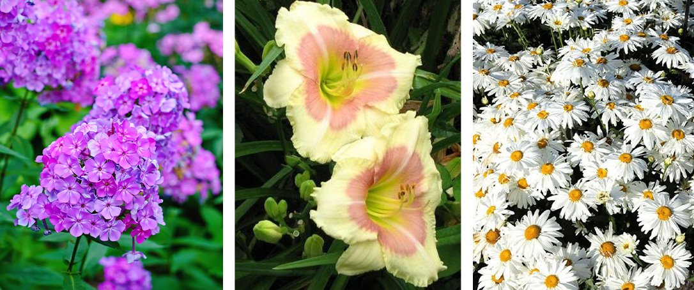
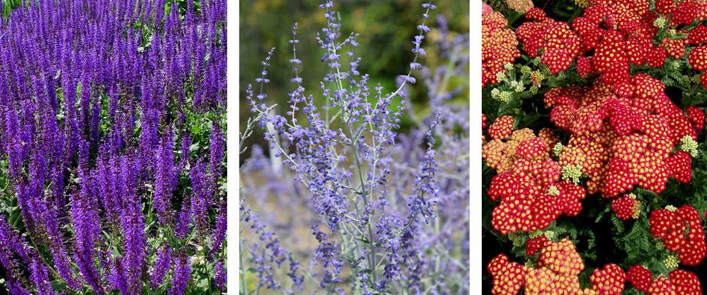
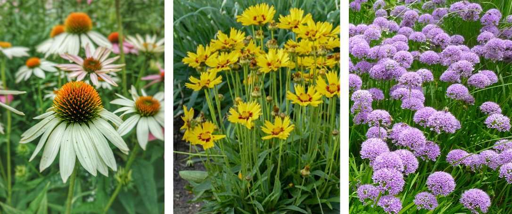

Najbolje Trajnice Za Celo Leto
Naše trajnice koje cvetaju u rano proleće počinju da se gase u Ajovi, a mi idemo u leto. Cvetne bašte izgledaju sveže i pune širom države, ali dok krećemo u najtoplije mesece, neki od tih prolećnih i ranih letnjih cvetova počinju pomalo da blede u intenzitetu letnje vrućine.
U stvari, postoji dosta različitih višegodišnjih biljaka koje dugo cvetaju i mogu da izdrže naše najtoplije letnje temperature. Evo nekih od naših omiljenih trajnica koje cvetaju tokom leta kako biste vašoj bašti dodali dugotrajnu boju.
Baštenski Plamenacobično počinje da cveta sredinom jula i nastavlja da proizvodi gomile lepog cveća na visokim stabljikama, preklapajući se sa mnogim trajnicama koje cvetaju u jesen. Plamenac se samoseje, tako da nastavite sa mrtvim glavama. Baštenski Plamenac je dostupan u velikom broju boja kao što su roze, crvene, ljubičaste, narandžaste i bele.
Divlji Ljiljan većina dnevnih ljiljana cveta samo nekoliko nedelja svakog leta, ali sorte koje ponovo cvetaju cvetaju više puta u sezoni. Postoje dva tipa; rano/kasno cvetanje i uzastopno cvetanje. Rani/kasni cvetovi obično cvetaju u proleće, a zatim ponovo u kasno leto ili jesen. Sukcesivno cvetajuće ljiljane proizvode serije cvetova, jedno za drugim nekoliko meseci. Sorte koje ponovo cvetaju dostupne su u širokom spektru boja.
Ivančica je potcenjena letnja cvetajuća trajnica. Obično su bele, što ih čini raznovrsnim za uparivanje sa drugim biljkama, a oni su trajnica koja dugo cveta, pogodna za oprašivače. Tratinčice dodaju dašak klasične jednostavnosti cvetnim baštama. Cvetaju od jula do jeseni, sa cvetnim stabljikama visokim do 0.9-1.2m stope.
Višegodišnja Salvija Porodica biljaka Salvia uključuje i višegodišnje i jednogodišnje biljke. Salvia nemorosa, Salvia-silvestris i Salvia farinacea su višegodišnje sorte. Salvija cveta veći deo leta, a ako nastavite sa mrtvim glavama, možete produžiti njihovu sezonu još duže.
Ruska Žalfija ima malo drugačiji izgled, sa mnogo sitnih ljubičastih cvetova na tankim klasovima. Iako njeno lišće i cvetovi mogu biti delikatni i tanki, biljka uspeva da zauzme dosta prostora. Može da bude visok i do 1.5m, a da se raširi skoro isto toliko.
Hajdučka trava je klasična letnja cvetna višegodišnja biljka. Njegovo meko lišće nalik paprati izdvaja grozdove cvetova jarkih boja, visokih od 30-90cm stope. Iarrov je dostupan u ružičastoj, crvenoj, žutoj i narandžastoj boji. Stolisnik ima tendenciju da se naturalizuje i širi prilično efikasno, što ga čini idealnim za vrtove oprašivača, kseriscaping i ponovno divljanje većih poseda.
Ehinaceja su još jedan pouzdan cveće tokom celog leta, počevši od juna pa sve do avgusta, pa i dalje ako vreme ostane dobro. Postaju prilično visoki, ponekad dostižu visinu i do 1.5m stopa. Šišarke su dostupne u raznim bojama, uključujući ružičastu, ljubičastu, belu, narandžastu, žutu, crvenu, pa čak i zelenu.
Djevojačko oko proizvodi male cvetove nalik na tratinčice iznad finog lišća nalik paprati. Visine se dosta razlikuju od jedne vrste do druge. Devojačko oko cveta veći deo leta, a kada cvetovi počnu da opadaju u kasno leto, možete podstaći drugo cvetanje tako što ćete ponovo orezati do ⅓ cele biljke.
Alijumi su zaista višegodišnja biljka. Iako ne cvetaju nužno tokom cele sezone, njihovi jedinstveni cvetovi nalik globusima pretvaraju se u upečatljive semenke koje pružaju prelepo vizuelno interesovanje tokom celog leta i ostaju da stoje zimi. Većina alijuma dolazi u nijansama ljubičaste, ali su takođe dostupne u velikom broju drugih boja. Različite sorte imaju različite nijanse crvene, ružičaste, bele i žute. Dostupne su i sorte koje rano i kasno cvetaju.
Letnje cvetajuće trajnice mogu pomoći da naše bašte prenesu kroz najtoplije dane u godini, kada bi druge biljke mogle da se bore sa vrućinom. Takođe će održavati da bašta izgleda sjajno kada ne želite da provedete tonu vremena na rezidbu ili plijevljenje korova pod vrelim suncem! Pogledajte višegodišnji izbor u našem baštenskom centru da biste dodali nekoliko ovih letnjih cvetova u vašu baštu.